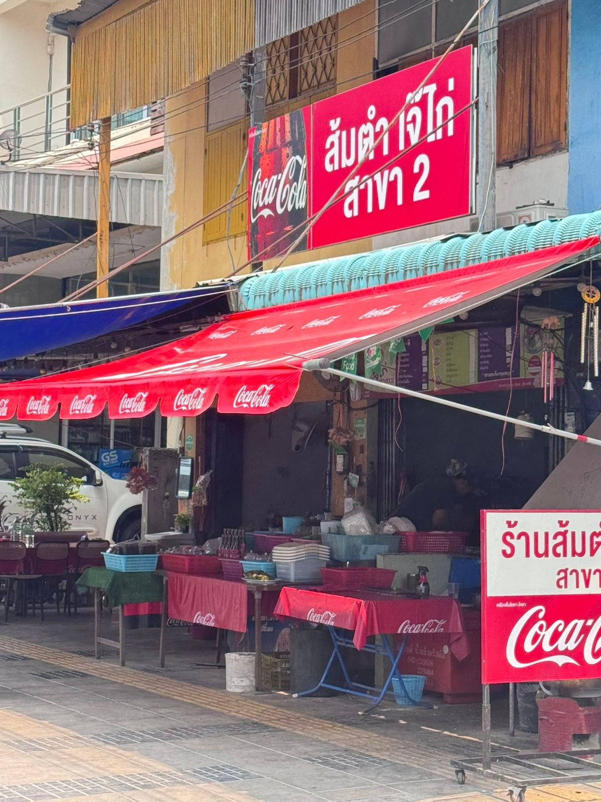
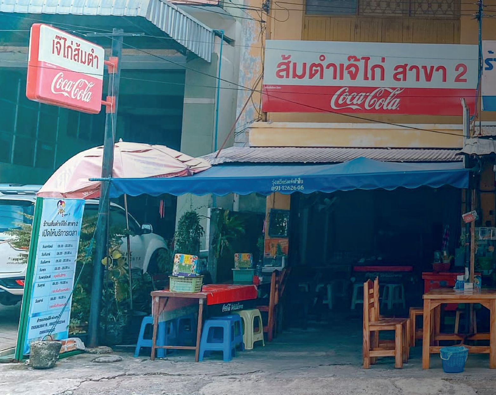
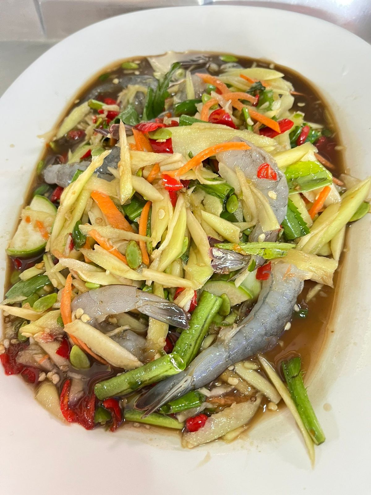
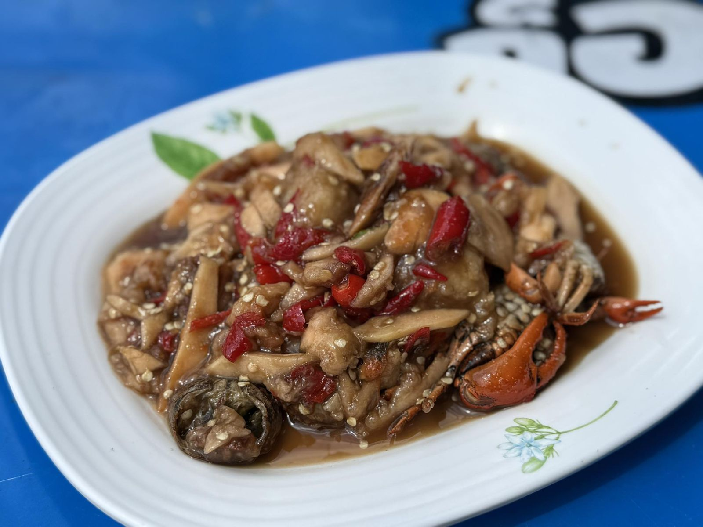
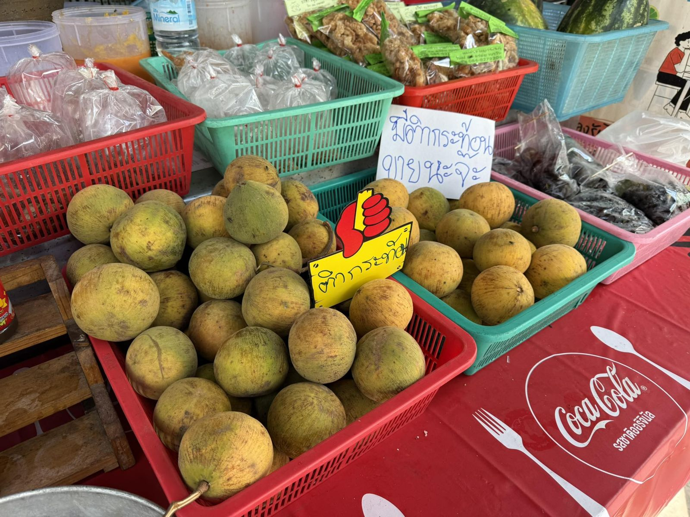

Classic
Som tam ส้มตำ
Green papaya, chilli, lime and fish sauce, pounded to order. Thai-style, with salted egg, or the full mixed platter.

Pounded-to-order som tam, grilled chicken and proper Isan flavours near the Wat Ban Chik intersection in Udon Thani. Sit in our air-conditioned room or order to go.
About us · เกี่ยวกับร้าน
Somtam Je Kai has been feeding Udon Thani for more than 20 years. Branch 2 sits on Naresuan Road near the Wat Ban Chik intersection. It's a busy, friendly local shop where every plate is pounded fresh in the mortar, spicy the way you ask for it.
Come in for a quick lunch, a family dinner or a big table with friends. We have an air-conditioned dining room with seating for more than 60, plus tables out front.
“การันตีความอร่อยนัว
อยู่คู่ชาวอุดรมามากกว่า 20 ปี”


Seats for 60+, so bring the whole family.
Call 086 239 2244 to reserve a table or order ahead.
Find us on Grab, LINE MAN and ShopeeFood.
What guests say · เสียงจากลูกค้า
“ตำนัวๆ แม่ค้าเลิศๆ ร้านนี้โอมรักมาก”Facebook visitor
“ร้านบริการเร็ว อาหารรอไม่นาน รสชาติจัดจ้าน ปริมาณอาหารขนาดจานใหญ่”Wongnai review
“ส้มตำแซ่บ ไก่ย่างอร่อย ราคาดี”Wongnai review
Gallery · ภาพจากร้าน


Visit us · แวะมาที่ร้าน